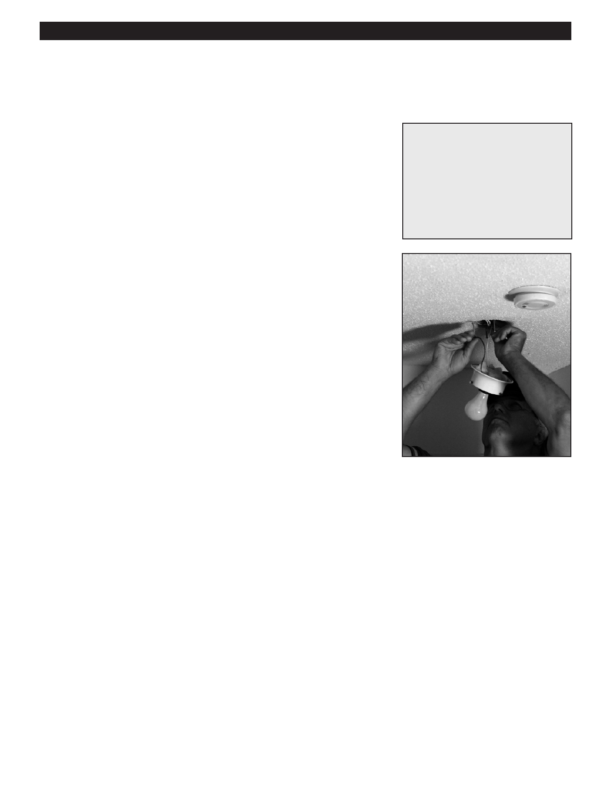

PA RT I C I PA N T R E S O U R C E G U I D E
Replacing an Incandescent Fixture
If the light fixture needs to be replaced, follow the steps below.
Safety
Tools and Materials Needed
Make sure the power is off before you replace the fixture.
Replacement light fixture
Use lockout/tagout procedures.
Lockout/tagout device
Use insulated tools.
Fiberglass ladder (if needed)
Wear eye protection and rubber-soled shoes. Remove jewelry.
Circuit tester or multimeter
Be careful using a ladder.
Insulated screwdriver
Support the fixture as you remove it. Don’t let any parts on fall on you.
Wire connectors
How-to Steps:
If you need to install a new light fixture, follow the steps for removing the old
fixture (see page 60) and then:
1. Install the mounting bracket. (It has an attached grounding screw.)
2. Use wire connectors to connect the white wires to each other and the
black (hot) wires to each other.
3. Pigtail the bare copper grounding wire to the grounding screw on the
mounting strap.
4. Attach the base of the light fixture to the mounting bracket.
5. Screw in a light bulb. (Make sure bulb does not exceed wattage rating
of fixture.)
6. Attach globe.
7. Return power to the light fixture and turn on to make sure it works.
Notes:
64